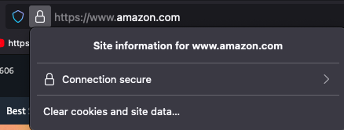

March 18, 2024
While many observers harp on the problems of mainstream versus social media, digital journalism is quietly undergoing a renaissance. Surprisingly, there is a tremendous amount of innovation, and even increasing subscription revenue, in pockets of local journalism.
This trend is likely to continue. Press Forward, for example, has sponsored a national initiative to "strengthen communities and democracy by supporting local news and information."
404 Media is representative of this transformation. They describe themselves as a “journalist-founded digital media company exploring the ways technology is shaping–and is shaped by–our world.” Ironically, emerging technology is also proving to be an existential threat to the business 404media is trying to build.
It turns out that AI tools are eating local journalism. 404 Media's founders, recently explained their predicament in a post, AI Spam Is Eating the Internet, Stealing Our Work, and Destroying Discoverability.
SpinRewriter lets users create 1,000 slightly different versions of the same article with a single click and to automatically publish them to as many WordPress sites as you want using a paid plugin.
The technology behind SpinRewriter is known as Emulated Natural Language (ENL). SpinRewriter boldly proclaims that ENL "produces the kind of articles where there's absolutely NO way to tell they were created by an AI." Furthermore, they claim to deliver "top-quality content that ranks on Google like a boss."
Indeed, the organization NewsGuard has so far identified 957 AI-generated news and information sites operating with little to no human oversight. According to Newsguard, "the rollout of generative artificial intelligence tools has been a boon to content farms and misinformation purveyors alike."
A boon to content farmers, but a bane for journalists and creators. Authentic journalism involves weeks of research, fact verification, and editing. That effort is supported primarily by programmatic advertising. AI tools not only simulate and plagiarize authentic content, they also deprive authentic creators of advertising revenue.
The problem, of course, is not limited to scrappy startups like 404 Media. Sam Harris, the philosopher, neuroscientist, podcast host and author, recently proclaimed in a podcast interview that “the internet will die because of AI.”
I think within the next 12 months- 2 years, . . . most of what's online that purports to be information could soon be fake. . . . We are not going to be able to figure out what's real.
But is there a positive side to this dire picture of an AI-driven information apocalypse? According to Andrew Golis:
There will be silver linings to The Great Robot Spam Flood of 2024.” Will the robots make us more human? This flood of authorless 'content' will help truly authored creativity shine in contrast.
Perhaps. But how can we distinguish between the authentic and the synthetic? Today's internet simply does not provide an unhackable and ungameable system for content authenticity and trust.
What’s to be done? Can trust technology save authentic digital media?
Few people know that the internet has a 'trust infrastructure' -- but it does. This trust layer is known as Web public key infrastructure, or 'Web PKI' for short. In its general use, Web PKI helps us know that we are sending our credit card information to a server controlled by the legal entity Amazon, Inc. Web PKI also encrypts that traffic, protecting credit card information from prying eyes.

Its limitation? Web PKI can't tell you whether you trust the specific content presented on a given web page. Web PKI cannot express whether an article, a graphic, or a video was created by a human that you trust, or is simply an AI-generated hallucination.
Yet another problem with Web PKI is centralization. Web PKI, through a system of certificate authorities and 'root certificates', provides you with no control over who you trust. Using today's Web PKI for content authenticity would naturally lend itself to censorship, where state or corporate interests decide what is trustworthy.
As far back as 2014, Moxie Marlinspike pointed out the limitations of Web PKI in his seminal talk, SSL and the Future of Authenticity.
We can boil down all of the problems with certificate authorities to a single missing property: what I call trust agility.
According to Marlinspike, trust agility has two basic properties:
- A trust decision can be easily revised at any time.
- Individual users can decide where to anchor their trust.
In place of rigid, fairly static, certificate authorities and root certificates, we need trust anchors that are more flexibile and human-centered. People should be able place their trust in organizations and networks that are familiar. Such trust agility would enable companies and creators to express their trustworthiness in network protocols themselves. Applications then become capable of expressing trustworthy content to people, without intermediation by shadowy central parties. A world with trust agility is a world without censorship or dark pattern algorithms.
Such trust agility depends on content authenticity and identity. As an industry, we’ve invested huge amounts of time and effort into authentication and access control for humans. What we have completely ignored is authentication for the content produced by those humans. We've secured the software supply chain, and the physical supply chain, giving no thought to securing the digital media supply chain.
Noosphere Technologies' goal is to level the playing field between humans and the robots. To achieve this goal, we are unbundling and democratizing PKI to make its power available to everyone who needs a recourse to authentic information.
We're also tackling the problem of app integration. The system is no good to anyone if developers can't easily integrate trust capabilities. Here we're drawing on our backgrounds in API management and developer experience to provide tooling that makes trust signals available via an array of heterogeneous apps, from newsreaders, to instant messaging, to gaming and beyond.
We’re building API-first services that make trust relationships transparent and manageable for non-technical people. To accomplish this, we’re building trust services that enable trust agility -- putting the power to curate trust relationship in the hands of everyone on the internet.
In the process, we hope to secure our human-to-human future and restore some of the decentralized spontaneity and anarchy of the 1990's pre-social media platform internet.